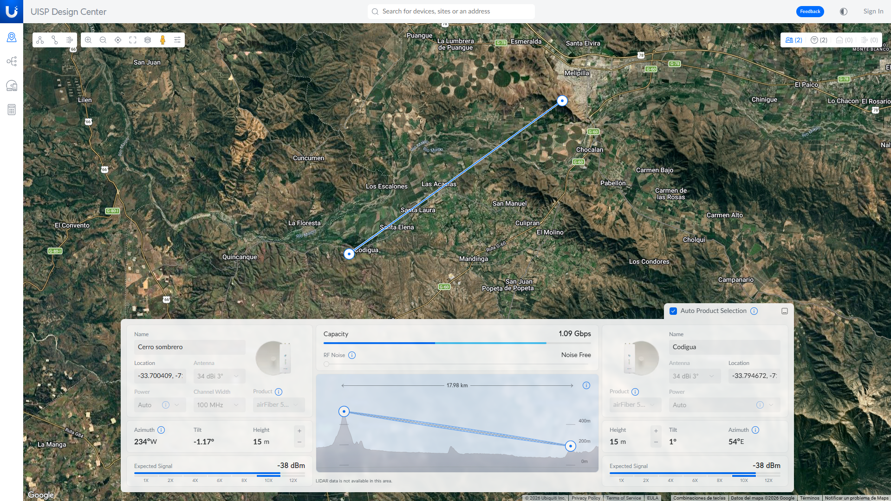

Capítulo 02 · Módulo 02
Elegir equipos con apoyo de UISP.
Explorar modelos, ubicación, distancia y alturas; mantener la evaluación RF en Radio Mobile.
Para qué abrimos la plataforma
UISP Design Center se utiliza online para explorar equipos Ubiquiti y revisar la ubicación de los extremos, su distancia y las alturas propuestas. Busca un enlace simple o bridge PtP, no una red multipunto. Las funciones disponibles pueden variar según la versión de la plataforma y la sesión.
Qué vamos a consultar
- Plantea A y B en los sitios elegidos y registra las coordenadas completas y la distancia inicial. En el siguiente módulo fijaremos los marcadores reales en Google Earth Pro.
- Introduce las alturas de instalación con la referencia que solicite cada campo. No aceptes una altura automática sin comprobar que es realizable.
- Explora los equipos propuestos o utiliza la selección manual para un modelo concreto. La recomendación es un candidato, no una elección definitiva.
- Identifica el radio y la antena de cada extremo, integrados o separados. Confirma en sus fichas la banda, ganancia, sensibilidad, polarización y compatibilidad; si hay plato, registra también el modelo de reflector y alimentador.
- Registra los modelos candidatos, coordenadas, distancia, alturas y fecha de consulta. Esos serán los datos que conservaremos de esta etapa.
Qué debe quedar fuera del informe RF
Si aparecen números de señal, velocidad o indicadores de viabilidad en UISP, no los copies como evidencia de que el enlace funciona ni los mezcles con los resultados de Radio Mobile. Tampoco ajustes el proyecto para perseguir una capacidad automática de la plataforma.
Llevar la propuesta a las siguientes etapas
Conserva la propuesta de UISP y pasa a Google Earth Pro para precisar los sitios, las coordenadas y el relieve. Después introduce esos datos y las características verificadas del conjunto radio–antena en Radio Mobile. Esa será la evaluación de factibilidad.
Si después cambia el diseño
Si eliges otro equipo o propones una altura diferente, actualiza la ficha y repite el análisis en Radio Mobile con las características verificadas del modelo. Si el cambio no satisface el despeje o el margen necesario, revisa la propuesta. La elección se justifica con ese análisis, no con un indicador favorable de UISP.
Guarda el proyecto si tu acceso lo permite o conserva capturas de los modelos y la geometría. No hace falta registrar predicciones RF de UISP para completar este módulo.
Cerro Sombrero–Codigua · referencia oficial

La selección automática de productos está activada. El campo del modelo y las coordenadas completas no se leen en esta vista. Después de esta captura, se eligió el airFiber 5XHD para ambos extremos; esa elección procede de la definición del taller, no de interpretar el nombre recortado. Las coordenadas no se completan desde esta imagen: las de Cerro Sombrero ya están documentadas en el módulo de Google Earth Pro. Faltan las de Codigua y el modelo de antena externa. También confirmaremos la referencia del campo Height antes de trasladarlo a Radio Mobile.
Esta es la referencia oficial del taller y reemplaza la propuesta anterior. El radio elegido para ambos extremos es el airFiber 5XHD (AF-5XHD), de 5 GHz. Selecciónalo manualmente en UISP y registra aparte la antena compatible que se utilizará, sin asumir que viene integrada. Para el siguiente paso faltan las coordenadas completas de Codigua y el modelo exacto de antena.
Ficha del radio: airFiber AF-5XHD · fabricante.
Datos y capturas que sí usaremos
Para este caso conservamos la ubicación indicada, los 17,98 km mostrados y los 15 m de altura configurados en ambos extremos. Conserva las vistas donde se lean las coordenadas completas y la selección del AF-5XHD y su antena. Primero precisaremos los marcadores en Google Earth Pro y después trasladaremos los datos confirmados a Radio Mobile.
Si en una captura aparecen también estimaciones de señal o capacidad, no alteraremos ni borraremos esos números. El pie de imagen aclarará que son indicadores de UISP y que no se adoptan como resultados de factibilidad. Los datos RF del informe seguirán procediendo de Radio Mobile.